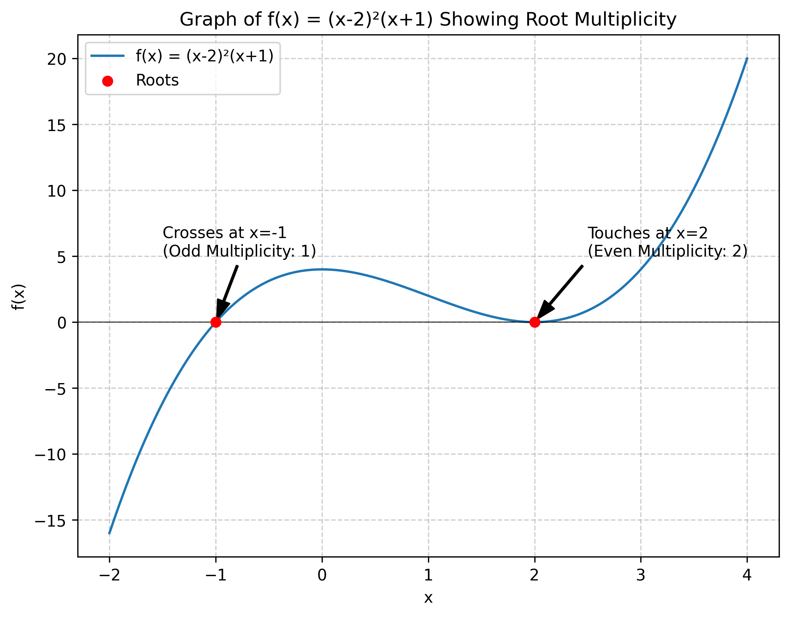
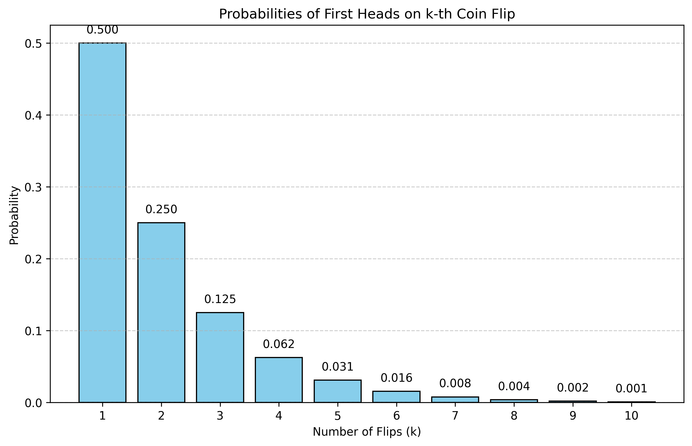
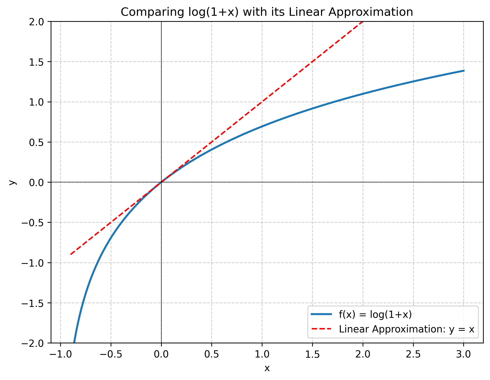
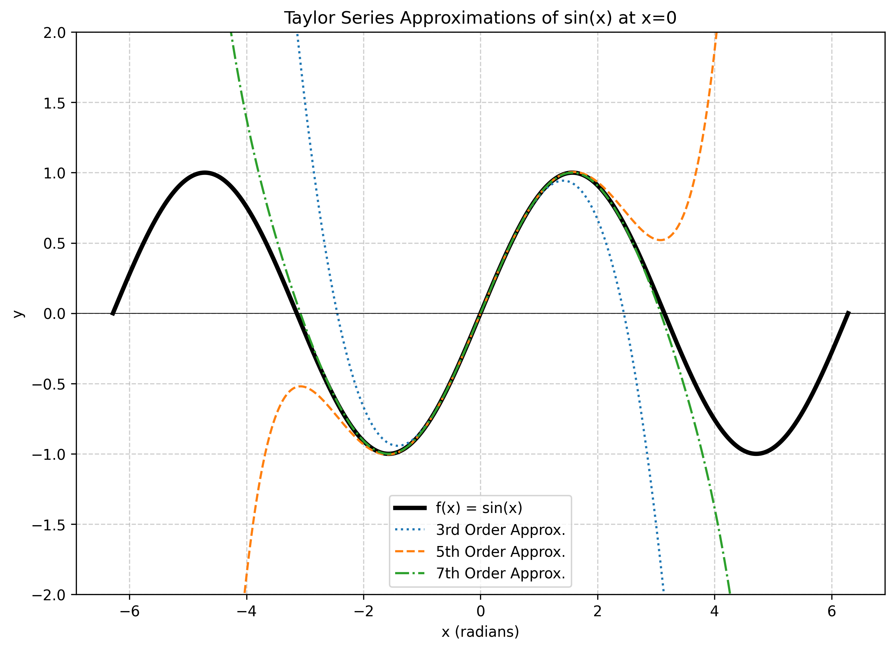
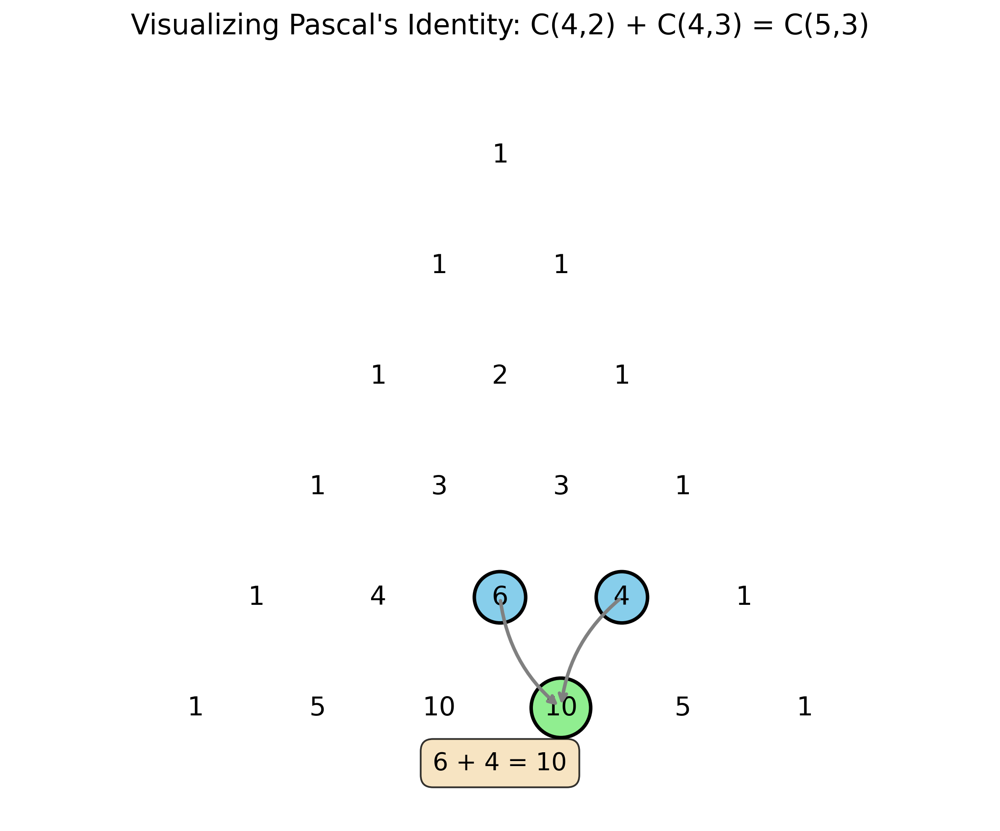
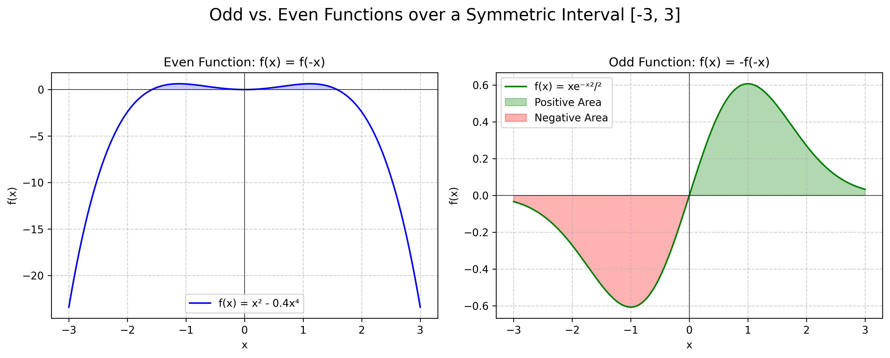
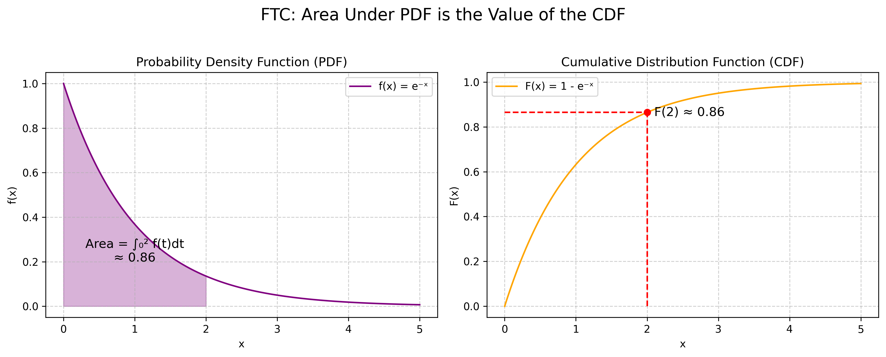

This document reviews foundational mathematical concepts frequently used in computer science, data science, and engineering. Data science is fundamentally about making decisions under uncertainty, and probability is the mathematical tool for modeling, analyzing, and predicting random events. This review covers topics including functions, polynomials, infinite series (geometric, Taylor), combinatorics (permutations, combinations, binomial theorem), and integration techniques, all of which are essential for this analysis [1]. This document combines notes originally prepared by Md Shahriar Karim [2] with theoretical background from [1].
Functions: Inverses and Properties
Inverse Functions
A function f is invertible if and only if it is a bijection, meaning it is both:
- One-to-one (Injective): Each element in the range is mapped to by at most one element in the domain.
- Onto (Surjective): Each element in the range is mapped to by at least one element in the domain.
When we invert a function, the range of the original function f becomes the domain for the inverse function f-1.
Find the inverse of \(f(x) = \dfrac{2}{e^x + 1}\).
Let \(y = f(x)\). We solve for \(x\):
Therefore, the inverse function is \(f^{-1}(y) = \ln\left(\dfrac{2}{y} - 1\right)\). Swapping variables to use \(x\), we get:
Checking for One-to-One (Injective)
A function is one-to-one if f(x1) = f(x2) implies x1 = x2.
Is \(f(x) = \dfrac{x+5}{x-6}\) one-to-one?
Set \(f(x_1) = f(x_2)\):
Yes, the function is one-to-one.
A strictly increasing or strictly decreasing function (where f'(x) > 0 or f'(x) < 0 for all x in the domain) is always one-to-one.
Is \(f(x) = xe^{x^4}\) one-to-one for \(x \in \mathbb{R}\)?
We check its derivative, \(f'(x)\):
Since \(e^{x^4}\) is always positive and \((1 + 4x^4)\) is always positive for any real \(x\), \(f'(x)\) is always positive. Because \(f'(x) > 0\) for all \(x\), the function is strictly increasing, and therefore it is one-to-one.
Polynomials
A polynomial of degree n is a function of the form:
f(x) = anxn + an-1xn-1 + ⋯ + a1x + a0
The degree is the highest power of x with a non-zero coefficient.
Roots and Multiplicity
The roots of a polynomial are the values of x for which f(x) = 0.
The multiplicity of a root is the number of times it appears as a factor. For example, in f(x) = (x-2)3(x+4)1, the root x=2 has a multiplicity of 3, and the root x=-4 has a multiplicity of 1.
The multiplicity of a root provides graphical information:
- Even multiplicity: The graph touches the x-axis at the root and turns around.
- Odd multiplicity: The graph crosses the x-axis at the root.
Sketch \(f(x) = (x-2)^2(x+1)\).
- Roots are \(x=2\) (multiplicity 2, even) and \(x=-1\) (multiplicity 1, odd).
- The graph will touch the x-axis at \(x=2\).
- The graph will cross the x-axis at \(x=-1\).

Infinite Series and Approximations
Infinite series are used frequently in probability, such as when evaluating the expectation and variance of random variables [1].
Geometric Series
A geometric series is a sequence where each term after the first is found by multiplying the previous one by a fixed, non-zero number called the common ratio, r.
Imagine you flip a fair coin until you get a head [1].
- P(1 flip: H) = \(\frac{1}{2}\)
- P(2 flips: TH) = \(\frac{1}{2} \times \frac{1}{2} = \frac{1}{4}\)
- P(3 flips: TTH) = \(\frac{1}{2} \times \frac{1}{2} \times \frac{1}{2} = \frac{1}{8}\)
The sequence of probabilities is \(\left\{\frac{1}{2}, \frac{1}{4}, \frac{1}{8}, \ldots\right\}\), a geometric sequence with first term \(a = \frac{1}{2}\) and common ratio \(r = \frac{1}{2}\).

The sum of the first \(n+1\) terms of a geometric series (starting from \(k=0\)) with first term \(a\) and common ratio \(r\) is [1]:
For the simple case \(a=1\): \(\displaystyle \sum_{k=0}^{n} r^k = \frac{1-r^{n+1}}{1-r}\).
If \(0 < |r| < 1\), the sum of an infinite geometric series converges to [1]:
For the simple case \(a=1\): \(\displaystyle \sum_{k=0}^{\infty} r^k = \frac{1}{1-r}\). This works because as \(n \to \infty\), the term \(r^{n+1}\) approaches 0.
Compute \(\displaystyle \sum_{k=2}^{\infty} \frac{1}{2^k}\).
This series is \(\frac{1}{4} + \frac{1}{8} + \frac{1}{16} + \cdots\)
The first term is \(a = \frac{1}{4}\) and the common ratio is \(r = \frac{1}{2}\). Since \(|r|<1\), the series converges.
Using the infinite sum formula:
By taking the derivative of the infinite series formula \(\displaystyle \sum_{k=0}^{\infty} r^k = \frac{1}{1-r}\) with respect to \(r\), we get a useful identity for \(0 < |r| < 1\) [1]:
Compute \(\displaystyle \sum_{k=1}^{\infty} k \cdot \frac{2}{3^k}\).
We can manipulate this to match the corollary:
Now apply the formula with \(r = \frac{1}{3}\):
Taylor and Maclaurin Series
Taylor approximation is a powerful tool for approximating complex, non-linear functions (like log(1+x)) with simpler polynomials. This is especially useful for analysis when x is close to a certain point a, e.g., x ≪ 1 [1].

The Taylor approximation of an infinitely differentiable function \(f(x)\) at a point \(x=a\) is [1]:
When \(a=0\), this is called a Maclaurin Series.
All derivatives \(f^{(n)}(x)\) are \(e^x\), so \(f^{(n)}(0) = e^0 = 1\) for all \(n\).
The derivatives at \(x=0\) follow a pattern: \(f(0)=0\), \(f'(0)=1\), \(f''(0)=0\), \(f'''(0)=-1\), etc. Plugging these into the formula, all the even-powered terms go to zero:
As you include more terms, the approximation becomes more accurate over a wider range.

Combinatorics
Combinatorics is the field of mathematics concerned with counting configurations of discrete events.
In a room of k people, what is the probability that at least one pair shares a birthday [1]?
It's easier to calculate the complement: the probability that no one shares a birthday (assuming 365 days).
- Person 1: \(\frac{365}{365}\) (can have any birthday)
- Person 2: \(\frac{364}{365}\) (must be different from person 1)
- Person 3: \(\frac{363}{365}\) (must be different from 1 and 2)
- ...
- Person k: \(\frac{365 - k + 1}{365}\)
The probability of all \(k\) people having different birthdays is:
For \(k=50\) people, \(P(\text{all different}) \approx 0.03\). So, the probability of at least one match is \(P(\text{match}) = 1 - 0.03 = 0.97\), or 97%!
Permutation
A permutation is an ordered arrangement of \(k\) items selected from a set of \(n\) distinct items without replacement.
The number of ways to choose \(k\) ordered items from \(n\) is [1]:
How many ways to award 1st, 2nd, and 3rd prize (ordered) from 100 contestants?
How many permutations of the letters ABCDEFG contain:
- the string BCD?
Treat (BCD) as a single block. We are permuting (BCD), A, E, F, G. These are 5 distinct items. So, the total permutations is 5! = 120. - the strings BA and GF?
Treat (BA) and (GF) as single blocks. We are permuting (BA), (GF), C, D, E. These are 5 distinct items. So, the total permutations is 5! = 120. - the strings ABC and CDE?
This implies the string must be (ABCDE). We are permuting (ABCDE), F, G. These are 3 distinct items. So, the total permutations is 3! = 6. - the strings CBA and BED?
This is impossible, as the letter 'B' must be in two different positions simultaneously. The number of permutations is 0.
Combination
A combination is an unordered selection of k items from a set of n distinct items without replacement. The order of selection does not matter.
This is also called "n choose k" or the binomial coefficient [1].
We divide the number of permutations by k! because there are k! ways to order the k chosen items, and in a combination, all those orderings are counted as one.
How many 5-card poker hands (unordered) can be dealt from a standard 52-card deck?
How many ways to select a 6-person crew (unordered) from 30 astronauts?
The Binomial Theorem
The binomial theorem uses combinations (binomial coefficients) to expand a binomial raised to a power.
For any real numbers \(a\) and \(b\) and integer \(n \geq 0\) [1]:
What is the coefficient of \(x^{12}y^{13}\) in the expansion of \((x+y)^{25}\)?
The term with \(y^{13}\) corresponds to \(k=13\). The term is \(\binom{25}{13} x^{25-13}y^{13} = \binom{25}{13} x^{12}y^{13}\). The coefficient is:
What is the coefficient of \(x^{12}y^{13}\) in the expansion of \((2x-3y)^{25}\)?
Let \(a = 2x\) and \(b = -3y\). We need the term with \(b^{13}\), which corresponds to \(k=13\). The term is \(\binom{25}{13} a^{25-13}b^{13} = \binom{25}{13} (2x)^{12}(-3y)^{13}\).
The coefficient is \(-\binom{25}{13} 2^{12}3^{13} = -\dfrac{25!}{12! \cdot 13!} \cdot 2^{12} \cdot 3^{13}\).
By cleverly choosing \(a\) and \(b\), we can prove identities:
- Let \(a=1, b=1\): \[ (1+1)^n = \sum_{k=0}^{n} \binom{n}{k} (1)^{n-k}(1)^k \quad \Rightarrow \quad 2^n = \sum_{k=0}^{n} \binom{n}{k} \]
- Let \(a=1, b=-1\): \[ (1-1)^n = \sum_{k=0}^{n} \binom{n}{k} (1)^{n-k}(-1)^k \quad \Rightarrow \quad 0 = \sum_{k=0}^{n} (-1)^k\binom{n}{k} \]
- Let \(a=1, b=2\): \[ (1+2)^n = \sum_{k=0}^{n} \binom{n}{k} (1)^{n-k}(2)^k \quad \Rightarrow \quad 3^n = \sum_{k=0}^{n} 2^k\binom{n}{k} \]
Pascal's Identity
This identity shows how the coefficients in one row of Pascal's triangle are formed from the row above it.
Let \(n\) and \(k\) be positive integers with \(1 \leq k \leq n\). Then [1]:

Integration Techniques
Integration is a core concept in calculus, often used to find the area under probability density functions to calculate probabilities.
Integration by Substitution
Used when an integrand contains a function and its derivative.
Evaluate \(\int 2x \cos(x^2) \, dx\).
Let \(u = x^2\), so \(du = 2x \, dx\).
Evaluate \(\int x^3 \sqrt{1-x^2} \, dx\).
Let \(u = 1-x^2\). Then \(du = -2x \, dx \Rightarrow x \, dx = -\frac{du}{2}\). Also, \(x^2 = 1-u\).
Rewrite the integral:
Method of Partial Fractions
Used to integrate rational functions (a polynomial divided by another).
Decompose \(\dfrac{5x-3}{(x+1)(x-3)}\).
Clear the denominator: \(5x-3 = A(x-3) + B(x+1)\).
- Let \(x=3\): \(5(3)-3 = A(0) + B(3+1) \Rightarrow 12 = 4B \Rightarrow B=3\)
- Let \(x=-1\): \(5(-1)-3 = A(-1-3) + B(0) \Rightarrow -8 = -4A \Rightarrow A=2\)
So, \(\dfrac{5x-3}{(x+1)(x-3)} = \dfrac{2}{x+1} + \dfrac{3}{x-3}\)
Decompose \(\dfrac{-2x+4}{(x^2+1)(x-1)^2}\).
The form includes a linear term for the irreducible quadratic \((x^2+1)\) and terms for the repeated root \((x-1)\).
After clearing the denominator and equating coefficients:
- \(A=2\)
- \(B=1\)
- \(C=-2\)
- \(D=1\)
So, \(\dfrac{-2x+4}{(x^2+1)(x-1)^2} = \dfrac{2x+1}{x^2+1} - \dfrac{2}{x-1} + \dfrac{1}{(x-1)^2}\)
Evaluate \(\displaystyle \int \frac{x+4}{x^3+3x^2-10x} \, dx\).
1. Factor denominator: \(x(x^2+3x-10) = x(x+5)(x-2)\).
2. Set up fractions:
3. Solve for A, B, C (Cover-up Method):
- For A (cover x, plug in x=0): \(A = \dfrac{0+4}{(0+5)(0-2)} = \dfrac{4}{-10} = -\dfrac{2}{5}\)
- For B (cover x+5, plug in x=-5): \(B = \dfrac{-5+4}{(-5)(-5-2)} = \dfrac{-1}{(-5)(-7)} = -\dfrac{1}{35}\)
- For C (cover x-2, plug in x=2): \(C = \dfrac{2+4}{(2)(2+5)} = \dfrac{6}{14} = \dfrac{3}{7}\)
4. Integrate:
Odd and Even Functions
This is a simplification for integrals over symmetric intervals, like \(\int_{-a}^{a} f(x) \, dx\) [1].
- An even function is symmetric about the y-axis, where \(f(x) = f(-x)\).
\[ \int_{-a}^{a} f(x) \, dx = 2 \int_{0}^{a} f(x) \, dx \]
- An odd function is anti-symmetric, where \(f(x) = -f(-x)\).
\[ \int_{-a}^{a} f(x) \, dx = 0 \]
\(f(x) = x e^{-x^2/2}\) is odd, since \(f(-x) = (-x)e^{-(-x)^2/2} = -xe^{-x^2/2} = -f(x)\).
Therefore, \(\displaystyle \int_{-5}^{5} x e^{-x^2/2} \, dx = 0\).

Completing the Square
Used to transform quadratic forms into standard integral forms.
Evaluate \(\displaystyle \int \frac{dx}{4x^2+4x+2}\).
Complete the square on the denominator:
The integral becomes \(\displaystyle \int \frac{dx}{(2x+1)^2 + 1}\). Let \(u = 2x+1\), \(du = 2 \, dx \Rightarrow dx = \dfrac{du}{2}\).
Evaluate \(\displaystyle \int \frac{dx}{\sqrt{2x-x^2}}\).
Complete the square on the denominator:
The integral becomes \(\displaystyle \int \frac{dx}{\sqrt{1-(x-1)^2}}\). Let \(u = x-1\), \(du = dx\).
The Fundamental Theorem of Calculus
The FTC links integration and differentiation, and is the formal basis for the relationship between a Probability Density Function (PDF) and a Cumulative Distribution Function (CDF) [1].
Let \(f\) be a continuous function on \([a, b]\) [1].
Consider \(f(t) = t^2\).
The integral from 0 to \(x\) is \(\displaystyle F(x) = \int_{0}^{x} t^2 \, dt = \left[\frac{t^3}{3}\right]_{0}^{x} = \frac{x^3}{3}\).
The derivative of \(F(x)\) is \(\displaystyle F'(x) = \frac{d}{dx}\left(\frac{x^3}{3}\right) = x^2\), which is \(f(x)\).

The Gaussian Integral
A famous definite integral that is central to probability and the normal distribution.
- Square the integral and use different dummy variables:
\[ I^2 = \left(\int_{-\infty}^{\infty} e^{-x^2} \, dx\right)\left(\int_{-\infty}^{\infty} e^{-y^2} \, dy\right) = \int_{-\infty}^{\infty} \int_{-\infty}^{\infty} e^{-(x^2+y^2)} \, dx \, dy \]
- Convert to polar coordinates: \(x^2 + y^2 = r^2\) and \(dx \, dy = r \, dr \, d\theta\). The region (entire xy-plane) becomes \(r \in [0, \infty)\) and \(\theta \in [0, 2\pi)\).
\[ I^2 = \int_{0}^{2\pi} \left(\int_{0}^{\infty} e^{-r^2} r \, dr\right) d\theta \]
- Solve the inner integral with substitution \((u = r^2, \, du = 2r \, dr \Rightarrow r \, dr = \frac{du}{2})\):
\[ \int_{0}^{\infty} e^{-r^2} r \, dr = \int_{0}^{\infty} e^{-u} \frac{du}{2} = \frac{1}{2} \left[-e^{-u}\right]_{0}^{\infty} = \frac{1}{2} (0 - (-1)) = \frac{1}{2} \]
- Solve the outer integral:
\[ I^2 = \int_{0}^{2\pi} \frac{1}{2} \, d\theta = \frac{1}{2} \left[\theta\right]_{0}^{2\pi} = \frac{1}{2} (2\pi) = \pi \]
Since \(I^2 = \pi\), we have \(I = \sqrt{\pi}\).
A more general form used in statistics is: